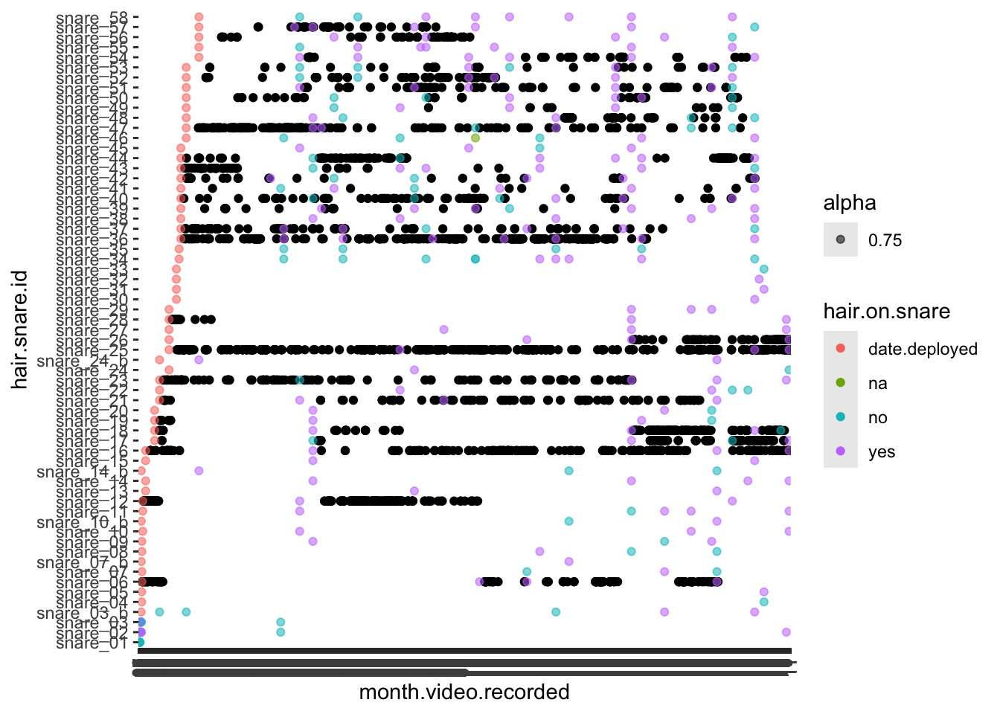
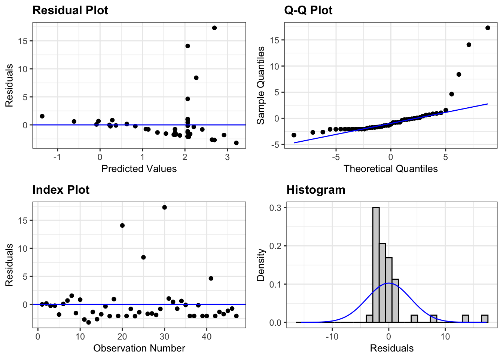

library(googledrive) # for downloading google files
library(lubridate) # for dates
library(dplyr) # for mutate function
library(ggplot2) # for graphing
library(tidyverse) # for pivoting longerEvaluation of placement, efficiency, and animal behavioral response of non-invasive hair snares for wild North American beavers (Castor canadensis)
Loading Packages
Downloading Data
# DOWNLOADING DATA FROM GOOGLE DRIVE
# sometimes need this to authorize access to my google drive account
drive_deauth()
file.download <- function(ID){
file_id <- ID
temp_file <- tempfile(fileext = ".csv") # creating a temporary file with .csv
file <- drive_download(as_id(file_id), path = temp_file)
read.csv(temp_file)
}
# snare_check <- file.download()
# snare_database <- file.download()
# hair <- file.download()
# videos <- file.download()Converting Dates and Times to Usable Format
# SNARE DATABASE
snare_database$date.deployed <- as.Date(snare_database$date.deployed,format = "%m-%d-%Y")
snare_database$date.collected <- as.Date(snare_database$date.collected,format = "%m-%d-%Y")
snare_database$date.trail.camera.deployed <- as.Date(snare_database$date.trail.camera.deployed,format = "%m-%d-%Y")
snare_database$date.trail.camera.collected <- as.Date(snare_database$date.trail.camera.collected,format = "%m-%d-%Y")
# SNARE CHECK
snare_check$date.checked <- as.Date(snare_check$date.checked,format = "%m-%d-%Y")
# VIDEOS
# combining date and time column
videos$date.time.video.recorded <- paste(videos$date.video.recorded, videos$time.24.hour)
videos$date.time.video.recorded <- as.POSIXct(videos$date.time.video.recorded, format="%m-%d-%Y %H:%M:%S")
videos$date.video.recorded <- as.Date(videos$date.video.recorded, format = "%m-%d-%Y")
videos$date.sd.card.collected <- as.Date(videos$date.sd.card.collected, format = "%m-%d-%Y")
videos$time.24.hour <- as.POSIXct(videos$time.24.hour, format = "%H:%M:%S") # this converts the time but gives it an arbitrary date attached
# ordering data
videos <- videos[order(videos$hair.snare.id, videos$date.time.video.recorded), ]
# seperating duplicates by this function
funct <- function(data){
data %>%
group_by(hair.snare.id) %>%
mutate(
date.time.video.recorded = if_else(
duplicated(date.time.video.recorded) &
date.time.video.recorded == lag(date.time.video.recorded),
as.POSIXct(date.time.video.recorded) + seconds(1),
date.time.video.recorded
)
) %>%
ungroup()
}
# running the function four times to get rid of all duplicates
for (i in 1:4) {
videos <- funct(videos)
}
# checking that it worked
videos %>%
group_by(hair.snare.id, date.time.video.recorded) %>%
summarize(n=n()) %>% filter(n !=1)
# HAIR
hair$date.collected.for.samples <- as.Date(hair$date.collected.for.samples, format = "%m-%d-%Y")
hair$date.collected <- hair$date.collected.for.samples
#hair$date.collected.for.samples <- as.POSIXct(hair$date.collected.for.samples, format="%m-%d-%Y")
# CREATING YEAR COLUMNS
# creating the column
snare_database$year <- year(snare_database$date.deployed)
snare_check$year <- year(snare_check$date.checked)
hair$year <- year(hair$date.collected.for.samples)
# summarizing number of snares deployed each year
snare_database %>% group_by(year) %>% summarize(n=n())
snare_database %>% group_by(pond.id) %>% summarize(n=n())
snare_database %>% group_by(pond.id, year) %>% summarize(n=n())Summarizing Hair Snares
Days each snare was deployed
# removing spaces
snare_database$hair.snare.id <- gsub(" ", "", snare_database$hair.snare.id)
# creating a column for number of days each snare was deployed
snare_database$number.of.days.deployed <- as.numeric(difftime(snare_database$date.collected, snare_database$date.deployed, units = "days"))
# calculating first and last date snares were deployed for each year
snare_database %>%
subset(!(hair.snare.id == "snare_01" |
hair.snare.id == "snare_02" |
hair.snare.id =="snare_03" |
hair.snare.id =="snare_59")) %>%
group_by(year) %>% summarize(first_date = min(date.deployed), last_date = max(date.collected))# A tibble: 2 × 3
year first_date last_date
<dbl> <date> <date>
1 2022 2022-08-27 2022-11-02
2 2023 2023-08-22 2023-10-27# calculating average number of days snares deployed
# don't want to include pilot snares 1, 2, and 3 but 3_b is alright
snare_database %>%
subset(!(hair.snare.id == c("snare_01","snare_02","snare_03","snare_59"))) %>%
group_by(year) %>%
summarize(average.days.deployed = mean(number.of.days.deployed),
sd = sd(number.of.days.deployed))# A tibble: 2 × 3
year average.days.deployed sd
<dbl> <dbl> <dbl>
1 2022 59.6 12.9
2 2023 50.5 4.95How often snares were checked
# arranging data so that it's in order for each hair.snare.id and in chronological order
snare_check <- snare_check %>% arrange(hair.snare.id, date.checked)
# Calculate the number of days between each check for each trap
snare_check <- snare_check %>%
group_by(hair.snare.id) %>%
mutate(days.between.checks = c(0, diff(date.checked))) %>%
ungroup()
# figuring out average number of days between hair snare checks for each year
snare_check %>%
subset(!(hair.snare.id == c("snare_01","snare_02","snare_03","snare_59"))) %>%
group_by(year) %>% summarize(mean = mean(days.between.checks),
median = median(days.between.checks),
sd = sd(days.between.checks))# A tibble: 2 × 4
year mean median sd
<dbl> <dbl> <dbl> <dbl>
1 2022 14.3 8 16.0
2 2023 7.77 7 7.38Beaver features snares were deployed on
snare_database %>% group_by(beaver.feature) %>% summarize(n=n())# A tibble: 5 × 2
beaver.feature n
<chr> <int>
1 below.lodge 2
2 dam 7
3 dam.crossing 16
4 feeding.area 1
5 feeding.trail 38Summarizing Cameras
Days cameras were deployed at each snare
# creating a column for number of days each trail camera was deployed
snare_database$number.of.days.camera.deployed <- as.numeric(difftime(snare_database$date.trail.camera.collected, snare_database$date.trail.camera.deployed, units = "days"))
# editing snares that had cameras deployed twice (snare_44 and snare_43)
snare_database$number.of.days.camera.deployed <- ifelse(snare_database$snare == "snare_43",50,snare_database$number.of.days.camera.deployed)
snare_database$number.of.days.camera.deployed <- ifelse(snare_database$snare == "snare_44",29,snare_database$number.of.days.camera.deployed)
# converting column to numeric
snare_database$number.of.days.camera.deployed <- as.numeric(snare_database$number.of.days.camera.deployed)
# creating column for if snare had camera or not
snare_database$camera <- ifelse(is.na(snare_database$number.of.days.camera.deployed), 0, 1)
# summarising number of snares that had cameras each year
snare_database %>%
subset(hair.snare.id != c("snare_01","snare_02","snare_03","snare_59")) %>%
group_by(camera, year) %>% summarize(n=n())# A tibble: 4 × 3
# Groups: camera [2]
camera year n
<dbl> <dbl> <int>
1 0 2022 5
2 0 2023 5
3 1 2022 27
4 1 2023 25# percent of time camera covered snare: number of days camera deployed / number of days snare deployed
snare_database$days.camera.per.days.snare.deployed <- snare_database$number.of.days.camera.deployed/snare_database$number.of.days.deployed
# calculating average percent of days cameras were on each snare out of the number of days each snare was deployed
snare_database %>%
subset(hair.snare.id != c("snare_01","snare_02","snare_03","snare_59")) %>%
group_by(year) %>%
summarize(average.percent.camera.days.deployed =
mean(days.camera.per.days.snare.deployed, na.rm = TRUE),
sd = sd(days.camera.per.days.snare.deployed, na.rm = TRUE))# A tibble: 2 × 3
year average.percent.camera.days.deployed sd
<dbl> <dbl> <dbl>
1 2022 0.909 0.233
2 2023 0.858 0.276Remote Camera Videos
Videos captured per snare per day
# calculating total number of videos recorded per snare
n.videos <- videos %>% group_by(hair.snare.id) %>% summarize(n_videos = n())
colnames(n.videos) <- c("hair.snare.id","n_videos")
# adding column to snare_database
snare_database <- merge(snare_database, n.videos, by = "hair.snare.id", all=TRUE)
# average number of videos caught per snare out of the total days cameras were deployed
snare_database$videos.taken.per.day <- snare_database$n_videos/snare_database$number.of.days.camera.deployedSpecies captured in videos
# removing spaces from species column
videos$main.species <- gsub(" ", "", videos$main.species)
# figuring out species captured in videos
n.species.videos <- videos %>% group_by(main.species) %>% summarize(n=n())
sum(n.species.videos$n) [1] 9186# total videos in them with beavers as the main species
subset(videos, videos$main.species == "beaver") %>% summarize(n=n())# A tibble: 1 × 1
n
<int>
1 5627# total videos in them with beavers as the secondary species
subset(videos, videos$secondary.species == "beaver") %>% summarize(n=n())# A tibble: 1 × 1
n
<int>
1 19# number of videos of beavers per snare
n.videos.beavers <- subset(videos, videos$main.species == "beaver" |
videos$secondary.species == "beaver") %>% group_by(hair.snare.id) %>% summarize(n.videos.beavers = n())
# adding column to snare_databasae
colnames(n.videos.beavers) <- c("hair.snare.id", "n.videos.beavers")
snare_database <- merge(snare_database, n.videos.beavers, by = "hair.snare.id", all = TRUE)
# calculating number of videos of beavers taken per all videos taken for each snare
snare_database$n.videos.beavers.per.video <- snare_database$n.videos.beavers/snare_database$n_videos
snare_database %>%
subset(hair.snare.id != c("snare_01","snare_02","snare_03","snare_59")) %>%
group_by(year) %>%
summarize(mean = mean(n.videos.beavers.per.video, na.rm=TRUE), sd = sd(n.videos.beavers.per.video, na.rm=TRUE))# A tibble: 2 × 3
year mean sd
<dbl> <dbl> <dbl>
1 2022 0.596 0.247
2 2023 0.484 0.281Times all species snagged snare
# replacing unk with NAs
videos$snag.snare <- ifelse(videos$snag.snare == "unk", NA, videos$snag.snare)
# total number of times snare was snagged
total.snags <- subset(videos, videos$snag.snare == 1) %>% group_by(hair.snare.id) %>% summarize(total.snags=n())
# adding to snare_database
colnames(total.snags) <- c("hair.snare.id","total.snags")
snare_database <- merge(snare_database, total.snags, by= "hair.snare.id", all=TRUE)
# number of snags per number of days camera deployed
snare_database$snags.per.camera.days <- snare_database$total.snags / snare_database$number.of.days.camera.deployed
# finding average number of snags per number of days camera deployed
mean(snare_database$snags.per.camera.days, na.rm=TRUE)[1] 1.98275sd(snare_database$snags.per.camera.days, na.rm=TRUE)[1] 4.098441Times beavers snagged snare
# figuring out number of times beaver snagged snare
subset(videos, videos$main.species == "beaver") %>%
group_by(snag.snare) %>%
summarize(n=n())# A tibble: 3 × 2
snag.snare n
<chr> <int>
1 0 2563
2 1 3061
3 na 3# percent of times beavers snagged snares at least once out of all videos that captured beavers
3061/(3061+3+2563)[1] 0.5439844# number of times beavers snagged each snare
beaver_snag <- subset(videos, videos$main.species == "beaver" &
videos$snag.snare == 1) %>% group_by(hair.snare.id) %>%
summarize(beaver_snag = n())
# adding to snare_database
colnames(beaver_snag) <- c("hair.snare.id","n.beaver.snag")
snare_database <- merge(snare_database, beaver_snag, by = "hair.snare.id", all = TRUE)
# average number of times beavers snagged snares per day
snare_database$beaver.snags.per.day <- snare_database$n.beaver.snag / snare_database$number.of.days.camera.deployed
mean(snare_database$beaver.snags.per.day, na.rm = TRUE)[1] 2.064686sd(snare_database$beaver.snags.per.day, na.rm = TRUE)[1] 4.090313# finding percent beavers snagged snare
snare_database$percent.beaver.snag <- (snare_database$n.beaver.snag) / (snare_database$total.snags)
mean(snare_database$percent.beaver.snag, na.rm = TRUE)[1] 0.8318469sd(snare_database$percent.beaver.snag, na.rm = TRUE)[1] 0.2023704Times other animals snagged snare
Muskrat
# MUSKRATS
# number of times muskrats snagged each snare
muskrat_snag <- subset(videos, videos$main.species == "muskrat" &
videos$snag.snare == 1) %>% group_by(hair.snare.id) %>% summarize(muskrat_snag = n())
# adding to snare_database
colnames(muskrat_snag) <- c("hair.snare.id","n.muskrat.snag")
snare_database <- merge(snare_database, muskrat_snag, by = "hair.snare.id", all = TRUE)
# finding percent muskrat snagged snare
snare_database$percent.muskrat.snag <- round(snare_database$n.muskrat.snag / snare_database$total.snags,2)
mean(snare_database$percent.muskrat.snag, na.rm = TRUE)[1] 0.1635714sd(snare_database$percent.muskrat.snag, na.rm = TRUE)[1] 0.2741029Otter
# OTTER
# number of times beavers snagged each snare
otter_snag <- subset(videos, videos$main.species == "otter" &
videos$snag.snare == 1) %>% group_by(hair.snare.id) %>% summarize(otter_snag = n())
# adding to snare_database
snare_database <- merge(snare_database, otter_snag, by = "hair.snare.id", all = TRUE)
# finding percent otters snagged snare
snare_database$percent.otter.snag <- round(snare_database$otter_snag / snare_database$total.snags,2)
mean(snare_database$percent.otter.snag, na.rm = TRUE)[1] 0.04sd(snare_database$percent.otter.snag, na.rm = TRUE)[1] 0.0277746Fisher
# FISHER
# number of times beavers snagged each snare
fisher_snag <- subset(videos, videos$main.species == "fisher" &
videos$snag.snare == 1) %>% group_by(hair.snare.id) %>% summarize(fisher_snag = n())
# adding to snare_database
snare_database <- merge(snare_database, fisher_snag, by = "hair.snare.id", all = TRUE)
# finding percent beavers snagged snare
snare_database$percent.fisher.snag <- round(snare_database$fisher_snag / snare_database$total.snags,2)
mean(snare_database$percent.fisher.snag, na.rm = TRUE)[1] 0.2616667sd(snare_database$percent.fisher.snag, na.rm = TRUE)[1] 0.3691838All Weasels (labeled as pine marten in code)
# PINE MARTEN THIS WILL BE ACTUALLY FOR ALL WEASELS
# number of times beavers snagged each snare
pinemarten_snag <- subset(videos, videos$main.species == "pinemarten" |
videos$main.species == "unkweasel" |
videos$main.species == "ermine" |
videos$main.species == "unkmustelid" |
videos$main.species == "longtailedweasel" |
videos$main.species == "shorttailedweasel" &
videos$snag.snare == 1) %>% group_by(hair.snare.id) %>% summarize(pinemarten_snag = n())
# adding to snare_database
colnames(pinemarten_snag) <- c("hair.snare.id","n.pinemarten.snag")
snare_database <- merge(snare_database, pinemarten_snag, by = "hair.snare.id", all = TRUE)
# finding percent all weasels snagged snare
snare_database$percent.pinemarten.snag <- round(snare_database$n.pinemarten.snag / snare_database$total.snags,2)
mean(snare_database$percent.pinemarten.snag, na.rm = TRUE)[1] 0.4326087sd(snare_database$percent.pinemarten.snag, na.rm = TRUE)[1] 0.7883828Graphing number of times animals captured snagging snares in videos
# getting rid of spaces in main species column
videos$main.species <- gsub(" ", "", videos$main.species)
# creating column indicating if similar species to beaver were recorded in videos
videos <- videos %>%
mutate(similar.species =
ifelse(main.species == "beaver"|
main.species == "fisher"|
main.species == "muskrat"|
main.species == "otter"|
main.species == "pinemarten"|
main.species == "unkweasel"|
main.species == "ermine"|
main.species == "unkmustelid"|
main.species == "longtailedweasel"|
main.species == "americanmink"|
main.species == "shorttailedweasel",main.species,"Other Species"
))
# collapsing all weasel species into "weasels"
videos$similar.species = ifelse((videos$similar.species == "pinemarten"|
videos$similar.species =="unkweasel"|
videos$similar.species =="ermine"|
videos$similar.species =="unkmustelid"|
videos$similar.species =="longtailedweasel"|
videos$similar.species =="shorttailedweasel"),
"weasels", videos$similar.species)
# renaming species so they look nicer in graph
videos$similar.species[videos$similar.species == "beaver"] <- "Beaver"
videos$similar.species[videos$similar.species == "americanmink"] <- "Mink"
videos$similar.species[videos$similar.species == "fisher"] <- "Fisher"
videos$similar.species[videos$similar.species == "muskrat"] <- "Muskrat"
videos$similar.species[videos$similar.species == "otter"] <- "Otter"
videos$similar.species[videos$similar.species == "mink"] <- "Mink"
videos$similar.species[videos$similar.species == "weasels"] <- "Other Weasels"
# getting rid of snare_ before snare ID so that it looks better in the graph
videos$snare_number <- sub("^snare_", "", videos$hair.snare.id)
# replacing snare 03_b with snare 58 to make labels easier to read
videos$snare_number <- ifelse(videos$snare_number == "03_b", "60",videos$snare_number)
# converting snare_number to a factor so it isn't read as an integer by ggplot
videos$snare_number<- as.factor(videos$snare_number)
# graphing counts
subset(videos, videos$snag.snare == 1) %>% ggplot(aes(x=snare_number, fill = similar.species)) + geom_bar() +
xlab("Snare ID") + # Change X-axis title
ylab("Number of times animals snagged snare") +
labs(fill = "Species") 
# graphing percentages
subset(videos, videos$snag.snare == 1) %>%
ggplot(aes(x=snare_number, fill = similar.species)) +
geom_bar(position="fill") +
xlab("Snare ID") + # Change X-axis title
ylab("Percent of instances animals snagged snare") +
labs(fill = "Species") +
theme_classic() +
scale_y_continuous(expand = c(0, 0)) +
theme(axis.text.x = element_text(size = 12), # Adjust x-axis text size
axis.text.y = element_text(size = 12), # Adjust y-axis text size
axis.title.x = element_text(size = 14), # Adjust x-axis label size
axis.title.y = element_text(size = 14))
# times we could not tell if beaver snagged snare from plant blockage
videos %>% filter(main.species == "beaver") %>% group_by(max.number.of.individuals) %>%
summarize(n=n())# A tibble: 6 × 2
max.number.of.individuals n
<chr> <int>
1 1 5194
2 2 395
3 3 31
4 4 5
5 6 1
6 na 1Times beavers went over, under, side of snare
# getting rid of spaces in data
videos$over.under.side.of.snare<- gsub(" ", "", videos$over.under.side.of.snare)
# summing over side and under
side.of.snare <- subset(videos, videos$main.species == "beaver" & over.under.side.of.snare != "na") %>% group_by(over.under.side.of.snare) %>% summarise(n=n())
# seperating side of body column into seperate columns
side.of.snare <- separate(side.of.snare, over.under.side.of.snare, into = paste("body", 1:3, sep="_"), sep = "\\.")
# figuring out total times beaver touched over, under, or side of snare. If beaver did more than one that was counted twice (once for side and once for over for example)
side.of.snare.sum <- side.of.snare %>%
pivot_longer(cols = c(body_1, body_2, body_3), names_to = "body_part", values_to = "side.of.snare") %>% group_by(side.of.snare) %>%
summarize(total_samples = sum(n, na.rm = TRUE))
# finding percent not including NAs
side.of.snare.sum$percent <- round(side.of.snare.sum$total_samples / (sum(side.of.snare.sum$total_samples[1:4])),2)Times each body part was snagged
# figuring out number of times each part of a beavers body was snagged
# converting columns to numeric
videos$snout.sampled <- as.numeric(videos$snout.sampled)
videos$head.sampled <- as.numeric(videos$head.sampled)
videos$neck.sampled <- as.numeric(videos$neck.sampled)
videos$back.sampled <- as.numeric(videos$back.sampled)
videos$side.sampled <- as.numeric(videos$side.sampled)
videos$belly.sampled <- as.numeric(videos$belly.sampled)
videos$legs.sampled <- as.numeric(videos$legs.sampled)
videos$rump.sampled <- as.numeric(videos$rump.sampled)
videos$tail.sampled <- as.numeric(videos$tail.sampled)
# subsetting data
videos.beaver <- subset(videos, videos$main.species == "beaver")
# summing number of times each body part was snagged for beavers
beaver.body.snag <- videos.beaver %>% group_by(hair.snare.id) %>%
summarise(snout = sum(snout.sampled),
head = sum(head.sampled),
neck = sum(neck.sampled),
back = sum(back.sampled),
side = sum(side.sampled),
belly = sum(belly.sampled),
legs = sum(legs.sampled),
rump = sum(rump.sampled),
tail = sum(tail.sampled))
# pivoting longer
beaver.body.snag <- pivot_longer(beaver.body.snag,
cols = -hair.snare.id,
names_to = "body.part",
values_to = "n.snagged")
# grouping by body part
beaver.body.snag$n.snagged <- as.numeric(beaver.body.snag$n.snagged)
beaver.body.snag.sum <- beaver.body.snag %>% group_by(body.part) %>% summarize(sum=sum(n.snagged, na.rm = TRUE))
# attaching percent
beaver.body.snag.sum$percent <- round(beaver.body.snag.sum$sum / (sum(beaver.body.snag.sum$sum)), 4)
beaver.body.snag.sum$percent.original <- (beaver.body.snag.sum$sum / (sum(beaver.body.snag.sum$sum)))Times beavers investigated snare or got stuck on snare
# total number of videos that recorded beavers
beaver <- subset(videos, videos$main.species == "beaver") %>% summarize(n=n())
# total number of videos that recroded beavers investigating snare
investigating <- videos %>% subset(main.species == "beaver") %>% subset(
main.behavior == "investigatingsnare" |
main.behavior == "investigatingcamera" |
main.behavior == "investigatingsnare.and.traveling") %>% summarize(n=n())
subset(videos, videos$main.species == "beaver" &
videos$main.behavior == "investigatingsnare") %>% summarize(n=n())# A tibble: 1 × 1
n
<int>
1 267# total number of videos that recorded beavers being influence by snare
influence <- subset(videos, videos$main.species == "beaver" &
videos$beaver.travel.inhibited.by.snare == 1) %>% summarize(n=n())
# percent of all videos recorded of beavers where beavers were investigating snare
investigating$n/beaver$n[1] 0.04833837# percent of all videos recorded of beavers where beavers were influenced by snare
influence$n/beaver$n[1] 0.001066288Times other animals snagged snare
# finding overall number of other species that snagges snare
subset(videos, videos$main.species != "beaver" & videos$snag.snare == 1) %>%
group_by(main.species) %>% summarize(n=n()) %>%
mutate(percent.snag = n / sum(n))# A tibble: 28 × 3
main.species n percent.snag
<chr> <int> <dbl>
1 americanmink 8 0.0174
2 blackbear 13 0.0283
3 bluejay 5 0.0109
4 bobcat 2 0.00436
5 broadwingedhawk 1 0.00218
6 canadajay 2 0.00436
7 fisher 7 0.0153
8 flyingsquirrel 1 0.00218
9 longtailedweasel 3 0.00654
10 moose 1 0.00218
# ℹ 18 more rowsHair
Total samples collected
# total samples collected
hair %>% filter(sample.type == "snare") %>% summarize(n=n()) n
1 179# total samples collected at each snare
snare_check %>% filter(hair.on.snare != "date.deployed") %>%
group_by(hair.snare.id, hair.on.snare) %>% summarize(n=n()) `summarise()` has grouped output by 'hair.snare.id'. You can override using the
`.groups` argument.# A tibble: 101 × 3
# Groups: hair.snare.id [63]
hair.snare.id hair.on.snare n
<chr> <chr> <int>
1 snare_01 no 7
2 snare_02 no 7
3 snare_02 yes 7
4 snare_03 no 2
5 snare_03 yes 4
6 snare_03_b no 3
7 snare_03_b yes 2
8 snare_04 no 1
9 snare_05 yes 1
10 snare_06 yes 3
# ℹ 91 more rows# snare_01, snare_04, snare_33, snare_35 did not collect samplesOther hair found on snares
snare_check %>% group_by(other_species_on_snare) %>% summarize(n=n())# A tibble: 3 × 2
other_species_on_snare n
<chr> <int>
1 "" 328
2 "bear" 2
3 "wolf" 5Samples collected after baiting with log and aspen
# number of snares baited with log
snare_check %>% filter(beaver_chewed_log_added == "yes") %>% group_by(hair.snare.id) %>% summarize(n=n())# A tibble: 6 × 2
hair.snare.id n
<chr> <int>
1 snare_03_b 1
2 snare_37 1
3 snare_39 1
4 snare_40 1
5 snare_42 1
6 snare_52 1# seeing if after they're baited with log if a hair sample is collected
snare_check %>% filter(hair.snare.id == "snare_03_b"|
hair.snare.id == "snare_37"|
hair.snare.id == "snare_39"|
hair.snare.id == "snare_40"|
hair.snare.id == "snare_42"|
hair.snare.id == "snare_52") %>%
select(c(hair.snare.id,date.checked,hair.on.snare,beaver_chewed_log_added))# A tibble: 42 × 4
hair.snare.id date.checked hair.on.snare beaver_chewed_log_added
<chr> <date> <chr> <chr>
1 snare_03_b 2023-08-22 date.deployed no
2 snare_03_b 2023-09-01 no no
3 snare_03_b 2023-09-07 no no
4 snare_03_b 2023-10-12 no yes
5 snare_03_b 2023-10-20 yes no
6 snare_03_b 2023-10-27 yes no
7 snare_37 2023-09-06 date.deployed no
8 snare_37 2023-09-15 yes no
9 snare_37 2023-09-21 yes no
10 snare_37 2023-09-28 no yes
# ℹ 32 more rows# all 30 snares in 2023 were initially baited with aspen
snare_check %>% filter(year == "2023") %>%
select(c(hair.snare.id,date.checked,hair.on.snare))# A tibble: 195 × 3
hair.snare.id date.checked hair.on.snare
<chr> <date> <chr>
1 snare_03_b 2023-08-22 date.deployed
2 snare_03_b 2023-09-01 no
3 snare_03_b 2023-09-07 no
4 snare_03_b 2023-10-12 no
5 snare_03_b 2023-10-20 yes
6 snare_03_b 2023-10-27 yes
7 snare_07_b 2023-08-23 date.deployed
8 snare_07_b 2023-10-13 yes
9 snare_10_b 2023-08-23 date.deployed
10 snare_10_b 2023-10-13 no
# ℹ 185 more rowsHair weight collected
# making column numeric
hair$entire.sample.weight.mg <- as.numeric(hair$entire.sample.weight.mg)
# figuring out number of samples collected
n.samples<-subset(hair, hair$sample.type == "snare") %>% group_by(hair.snare.id) %>% summarize(n.samples=n())
# summarising total samples collected
sum(n.samples$n.samples)[1] 179# adding number of samples collected to snare_database
snare_database <- merge(snare_database, n.samples, by="hair.snare.id", all = TRUE)
# figuring out number of samples collected per number of days each snare was deployed
snare_database$sample.collection.rate <- snare_database$n.samples / snare_database$number.of.days.deployed
# figuring out weight of samples collected per snare (more informative than number)
hair.weight <- subset(hair, hair$sample.type == "snare" & !is.na(entire.sample.weight.mg)) %>%
group_by(hair.snare.id) %>%
summarize(weight.of.all.samples.collected.mg = sum(entire.sample.weight.mg))
# adding weight to the snare_database
snare_database <- merge(snare_database, hair.weight, by="hair.snare.id", all=TRUE)
# max and min of individual samples
subset(hair, hair$sample.type == "snare" & !is.na(entire.sample.weight.mg)) %>%
summarize(min = min(entire.sample.weight.mg), max=max(entire.sample.weight.mg)) min max
1 0 1540# figuring out weight of samples collected per number of days snare deployed
snare_database$hair.weight.per.day <- round(snare_database$weight.of.all.samples.collected.mg/snare_database$number.of.days.deployed,2)
# summarizing weight of sample collected per number of days snare deployed
snare_database %>% summarize(mean = mean(hair.weight.per.day, na.rm=T),
sd=sd(hair.weight.per.day, na.rm=T),
min = min(hair.weight.per.day, na.rm=T),
max = max(hair.weight.per.day, na.rm=T)) mean sd min max
1 2.748644 5.387187 0 36.48# turning entire sample weight into numeric just in case
hair$entire.sample.weight.mg <- as.numeric(hair$entire.sample.weight.mg)
# seeing if there is a trend between dirtiness of hair and weight
subset(hair, hair$sample.type == "snare") %>% ggplot(aes(x=dirt.score, y=entire.sample.weight.mg)) + geom_point()
# grouping data by dirt score
subset(hair, hair$sample.type == "snare") %>% group_by(dirt.score) %>% summarize(n=n())# A tibble: 6 × 2
dirt.score n
<chr> <int>
1 0 75
2 1 49
3 2 24
4 3 17
5 4 13
6 na 1Dirtiness of hair
# finding average dirt score
hair$dirt.score <- as.numeric(hair$dirt.score)
subset(hair, hair$sample.type == "snare" & !is.na(dirt.score)) %>%
summarise(mean = mean(dirt.score)) mean
1 1.123596# figuring out average dirtiness per hair snare
mean.dirtiness <- subset(hair, hair$sample.type == "snare") %>%
group_by(hair.snare.id) %>%
summarize(mean.dirtiness = round(mean(dirt.score, na.rm = TRUE),2))
# adding mean dirtiness to snare_database
snare_database <- merge(snare_database, mean.dirtiness, by = "hair.snare.id", all=TRUE)
# figuring out percentage of each dirt score in hair samples
dirt.score <- subset(hair, hair$sample.type == "snare") %>%
group_by(dirt.score) %>% summarize(n=n())
dirt.score$percent <- round((dirt.score$n)/(sum(dirt.score$n)-2)*100,2)
# linear model for dirt scores to see if sample weight is influenced by dirt score
mod1 <- lm(entire.sample.weight.mg ~ dirt.score,
data = subset(hair, hair$sample.type == "snare"))
summary(mod1)
Call:
lm(formula = entire.sample.weight.mg ~ dirt.score, data = subset(hair,
hair$sample.type == "snare"))
Residuals:
Min 1Q Median 3Q Max
-194.68 -37.32 8.81 14.81 1344.32
Coefficients:
Estimate Std. Error t value Pr(>|t|)
(Intercept) -8.806 11.840 -0.744 0.458
dirt.score 51.122 7.023 7.280 1.07e-11 ***
---
Signif. codes: 0 '***' 0.001 '**' 0.01 '*' 0.05 '.' 0.1 ' ' 1
Residual standard error: 117.8 on 176 degrees of freedom
(1 observation deleted due to missingness)
Multiple R-squared: 0.2314, Adjusted R-squared: 0.227
F-statistic: 52.99 on 1 and 176 DF, p-value: 1.07e-11# figuring out if there are snares with no dirty samples
hair.snare.zero <- hair %>% group_by(hair.snare.id) %>% summarize(mean.dirt = mean(dirt.score)) %>% mutate(no.dirt = ifelse(mean.dirt == 0, "yes", "no")) %>% filter(no.dirt == "yes")
hair.snare.zero.id <- hair.snare.zero$hair.snare.id
#snare_database[snare_database$hair.snare.id %in% hair.snare.zero.id,]
# creating dataset for hair samples with a score of 0 for dirtiness
hair.zero <- hair %>% filter(sample.type == "snare" & dirt.score == 0)
# max weight of individual samples with a dirt score of 0
max(hair.zero$entire.sample.weight.mg)[1] 113# figuring out weight of samples collected per number of days snare deployed for those with a dirt score of 0
hair.zero.weight <- hair.zero %>% group_by(hair.snare.id) %>% summarize(clean.sample.weight = sum(entire.sample.weight.mg))
# merging with snare_database
snare_database <- merge(snare_database, hair.zero.weight, by = "hair.snare.id")
# figuring out weight of clean samples collected per day snares deployed
snare_database$clean.sample.weight.per.day <- snare_database$clean.sample.weight/snare_database$number.of.days.deployed
# summarizing weight of sample collected per number of days snare deployed
# snare_database %>% summarize(mean = mean(clean.sample.weight.per.day, na.rm=T),
# sd=sd(clean.sample.weight.per.day, na.rm=T),
# min = min(clean.sample.weight.per.day, na.rm=T),
# max = max(clean.sample.weight.per.day, na.rm=T))Guard hairs
# alot = more than 10 guard hairs
hair %>% filter(sample.type == "snare") %>% group_by(number.of.guard.hairs.summary) %>% summarize(n=n()) # A tibble: 4 × 2
number.of.guard.hairs.summary n
<chr> <int>
1 less.than.ten 65
2 more.than.ten 89
3 na 1
4 none 24# at least one guard hair
(65+89) / (65+89+24)[1] 0.8651685# more than ten
89 / (65+89+24)[1] 0.5Hair follicles
# summarizing follicles
hair %>% filter(sample.type == "snare") %>% group_by(follicle.present) %>% summarize(n=n())# A tibble: 3 × 2
follicle.present n
<chr> <int>
1 na 3
2 no 79
3 yes 97# finding percent of hair with follicles
97 / (97+79)[1] 0.5511364Merging video data and hair data based on dates that hair was collected
Cleaning data
# removing times when snare was deployed
snare_check.1 <- snare_check %>% filter(hair.on.snare != "date.deployed")
# ADDING HAIR SAMPLE DATA TO SNARE CHECK DATA
# picking columns for hair to make things easier
hair_short <- hair %>% filter(sample.type == "snare") %>%
select(sample.id, date.collected.for.samples, hair.snare.id, dirt.score,
entire.sample.weight.mg,number.of.guard.hairs, follicle.present, year)
# picking columns from snare_check that we need to make things easier
snare_check_short <- snare_check %>% select(hair.snare.id, date.checked, sample.id, days.between.checks, animal.videos.recorded.on.camera)
# re-naming columns to make them more easy to merge
colnames(snare_check_short) <- c("hair.snare.id","date.collected.for.samples","sample.id","days.between.checks", "animal.videos.recorded.on.camera")
# merging date check with hair samples collected
# this dataset includes all times we checked snares, regardless of if there were videos recorded or not
snare_check_new <- merge(hair_short, snare_check_short, by =
c("hair.snare.id","date.collected.for.samples","sample.id"), all=TRUE)# REFORMATTING DATA
# adding column indicating if a sample was collected
snare_check_new <- snare_check_new %>% mutate(sample.collected = ifelse(
sample.id != "na",1,0
))
# adding column to indicate if the sample was potentially recorded on video
snare_check_new <- snare_check_new %>% mutate(sample.recorded.on.video = ifelse(
animal.videos.recorded.on.camera == 1 &
sample.collected == 1, 1, 0
))
# adding a column to the hair dataset that indicates the days since the snare was checked and when the hair was collected
snare_check_new <- snare_check_new %>% mutate(start.time.period.sample.and.videos = date.collected.for.samples - days.between.checks)
# adding noon to the start time period to approximate when each new sampling period started
snare_check_new$start.time.period.sample.and.videos <- paste(snare_check_new$start.time.period.sample.and.videos, "12:00")
# adding 11:59 to the time each hair was collected to approximate when each snare was checked
snare_check_new$date.collected.for.samples <-paste(snare_check_new$date.collected.for.samples, "11:59")
# changing to date format
snare_check_new$date.collected.for.samples <-
ymd_hm(snare_check_new$date.collected.for.samples)
snare_check_new$start.time.period.sample.and.videos <-
ymd_hm(snare_check_new$start.time.period.sample.and.videos)# COMBINING DATA ABOUT HAIR SAMPLES AND SNARE CHECKS WITH VIDEO DATA
# DATE SD CARD COLLECTED IS NOT THE SAME AS DATE SNARE CHECKED NECESSARILY
# changing column names so they match with video column names
colnames(snare_check_new)[2] <- "date.hair.collected"
# adding time to video date sd card was collected to match summary_snares
videos$date.sd.card.collected.time <- paste(videos$date.sd.card.collected, "11:59")
videos$date.sd.card.collected.time <- ymd_hm(videos$date.sd.card.collected.time)
# merging all possibilities
merged <- merge(videos, snare_check_new, by = "hair.snare.id", all=TRUE)
# filtering out ones that don't make sense
# creating column that tells us if the videos recorded are in range of when the hair snare was checked
merged$videos_within_range <- with(merged,
date.time.video.recorded >= start.time.period.sample.and.videos &
date.time.video.recorded < date.hair.collected)
#merged %>% group_by(hair.snare.id, date.hair.collected, videos_within_range) %>%
#summarize(n=n())
# filtering rows where the videos weren't taken in the time when the snares were checked
# if videos weren't taken at the times between checks they are NA so we can just get rid of the FALSE columns
merged.1 <- merged %>% filter(videos_within_range != FALSE) # this also gets rid of NAs
# checking that it worked
merged.1 %>% group_by(hair.snare.id, date.hair.collected) %>% summarize(n=n())# A tibble: 151 × 3
# Groups: hair.snare.id [48]
hair.snare.id date.hair.collected n
<chr> <dttm> <int>
1 snare_03 2022-08-21 11:59:00 17
2 snare_03 2022-08-26 11:59:00 28
3 snare_03 2022-09-14 11:59:00 60
4 snare_03_b 2023-09-01 11:59:00 11
5 snare_03_b 2023-09-07 11:59:00 6
6 snare_05 2022-10-29 11:59:00 12
7 snare_06 2022-10-04 11:59:00 34
8 snare_06 2022-10-10 11:59:00 20
9 snare_06 2022-10-24 11:59:00 110
10 snare_07 2022-10-10 11:59:00 267
# ℹ 141 more rowsvideos_hair_all<-merged.1
# THIS DATA ONLY INCLUDES TIMES WHEN VIDEOS WERE RECORDEDMerging video and hair data (videos_hair_all) with hair snare database
# selecting only the columns we need from the hair snare database
snare_database_1 <- select(snare_database,
hair.snare.id,
northing, easting,
date.deployed, date.collected, number.of.days.deployed,
date.trail.camera.deployed, date.trail.camera.collected,
number.of.days.camera.deployed, days.camera.per.days.snare.deployed,
beaver.feature, brushes,
n_videos, n.videos.beavers,
total.snags, snags.per.camera.days,
n.beaver.snag, n.muskrat.snag,
percent.muskrat.snag, otter_snag)
# merging
videos_hair_all <- merge(videos_hair_all, snare_database_1, by="hair.snare.id")Visualizing data
(plot <- videos_hair_all %>%
mutate(month.video.recorded = format(date.time.video.recorded, "%m %d %H:%M")) %>%
ggplot(aes(x=month.video.recorded, y=hair.snare.id)) +
scale_x_discrete(labels = function(x) format(as.Date(x, "%m %d %H:%M"), "%m")) +
geom_point() +
geom_point(data=snare_check,
aes(x= format(date.checked, "%m %d %H:%M"),
y=hair.snare.id,
col = hair.on.snare,
alpha = 0.75)) +
theme(axis.text.x = element_text(angle = 90, vjust = 0.5, hjust=1))) 
Models
Getting data ready for model
# figuring out which columns are which
column_indices <- seq_along(names(videos_hair_all))
# Print the column names along with their indices
# for (i in column_indices) {
# cat("Column", i, ":", names(videos_hair_all)[i], "\n")
# }
# re-naming some columns so they make more sense
videos_hair_all <- videos_hair_all %>% rename(date.snare.deployed = date.deployed)
videos_hair_all <- videos_hair_all %>% rename(date.snare.collected = date.collected)
videos_hair_all <- videos_hair_all %>% rename(number.of.days.snare.deployed = number.of.days.deployed)
# converting all numeric columns to numeric
videos_hair_all <- videos_hair_all %>%
mutate_at(vars(max.number.of.individuals, min.number.of.individuals, min.number.of.individuals , max.number.of.adults ,
max.number.of.neonates , max.number.of.females , max.number.of.males ,
max.number.of.unk.sex , snag.snare , number.of.times.snag.snare , snout.sampled ,
head.sampled , neck.sampled , back.sampled , side.sampled , belly.sampled ,
legs.sampled , rump.sampled , tail.sampled , beaver.travel.inhibited.by.snare ,
dirt.score , entire.sample.weight.mg , number.of.guard.hairs , follicle.present ,
days.between.checks , animal.videos.recorded.on.camera , sample.collected ,
sample.recorded.on.video , number.of.days.snare.deployed , brushes ,
number.of.days.camera.deployed , days.camera.per.days.snare.deployed ,
n_videos , n.videos.beavers ,
total.snags , snags.per.camera.days , n.beaver.snag ,
n.muskrat.snag , percent.muskrat.snag , otter_snag), as.numeric)
# filtering videos for beaver and grouping them by variables of interest, then summarizing the sum of number of individuals were captured, number of time adults and babies were captured, number of times individuals crossed the snare, and number of times each body part was snagged
# for all snares that had videos taken at them and the time periods that those videos were taken, this tells us if hair samples were collected
hair.for.model <- videos_hair_all %>%
mutate(is_beaver = case_when(main.species == "beaver" ~ "beaver", TRUE ~ "other")) %>%
group_by(is_beaver, hair.snare.id, sample.id, entire.sample.weight.mg,
sample.collected, dirt.score, date.hair.collected, days.between.checks, brushes,
beaver.feature) %>%
summarize(
n.max.ind = sum(max.number.of.individuals, na.rm = TRUE),
n.max.adults = sum(max.number.of.adults, na.rm = TRUE),
n.max.bb = sum(max.number.of.neonates, na.rm = TRUE),
n.crossed.snare = sum(number.of.times.snag.snare, na.rm = TRUE),
n.snout = sum(snout.sampled, na.rm = TRUE),
n.head = sum(head.sampled, na.rm = TRUE),
n.neck = sum(neck.sampled, na.rm = TRUE),
n.back = sum(back.sampled, na.rm = TRUE),
n.side = sum(side.sampled, na.rm = TRUE),
n.belly = sum(belly.sampled, na.rm = TRUE),
n.legs = sum(legs.sampled, na.rm = TRUE),
n.rump = sum(rump.sampled, na.rm = TRUE),
n.tail = sum(tail.sampled, na.rm = TRUE)
) %>%
ungroup() %>%
pivot_wider(
names_from = is_beaver,
values_from = c(n.max.ind, n.max.adults, n.max.bb, n.crossed.snare,
n.snout, n.head, n.neck, n.back, n.side, n.belly,
n.legs, n.rump, n.tail),
names_glue = "{.value}_{is_beaver}"
)
# Camera got ruined by blackbear (snare_08)
hair.for.model <- hair.for.model %>% filter(hair.snare.id != "snare_08")
# finding weight of sample / number of days sample could have been collected in
hair.for.model <- hair.for.model %>% mutate(weight.by.day = entire.sample.weight.mg/days.between.checks)
# removing sample hair_373 because it's missing
hair.for.model <- hair.for.model %>% filter(sample.id != "hair_373")
# replacing NAs with 0's
hair.for.model$n.crossed.snare_beaver <-
ifelse(is.na(hair.for.model$n.crossed.snare_beaver), 0,
hair.for.model$n.crossed.snare_beaver)
hair.for.model$n.crossed.snare_other <-
ifelse(is.na(hair.for.model$n.crossed.snare_other), 0,
hair.for.model$n.crossed.snare_other)
hair.for.model$n.snout_beaver[is.na(hair.for.model$n.snout_beaver)] <- 0
hair.for.model$n.head_beaver[is.na(hair.for.model$n.head_beaver)] <- 0
hair.for.model$n.neck_beaver[is.na(hair.for.model$n.neck_beaver)] <- 0
hair.for.model$n.back_beaver[is.na(hair.for.model$n.back_beaver)] <- 0
hair.for.model$n.side_beaver[is.na(hair.for.model$n.side_beaver)] <- 0
hair.for.model$n.belly_beaver[is.na(hair.for.model$n.belly_beaver)] <- 0
hair.for.model$n.legs_beaver[is.na(hair.for.model$n.legs_beaver)] <- 0
hair.for.model$n.rump_beaver[is.na(hair.for.model$n.rump_beaver)] <- 0
hair.for.model$n.tail_beaver[is.na(hair.for.model$n.tail_beaver)] <- 0Model 1: What influences the likelihood of a sample being collected
(For all sampling periods where videos were recorded at snares)
hair sample collected ~
brushes present +
beaver feature +
number of times beavers snagged snare +
number of times non-beaver animals snagged snare
Standardizing variables
# standardizing variables
hair.for.model$days.between.checks.std.mod.1 <- (hair.for.model$days.between.checks - mean(hair.for.model$days.between.checks)) / sd(hair.for.model$days.between.checks)
hair.for.model$n.crossed.snare_beaver.std.mod.1 <- (hair.for.model$n.crossed.snare_beaver - mean(hair.for.model$n.crossed.snare_beaver)) / sd(hair.for.model$n.crossed.snare_beaver)
hair.for.model$n.crossed.snare_other.std.mod.1 <- (hair.for.model$n.crossed.snare_other - mean(hair.for.model$n.crossed.snare_other)) / sd(hair.for.model$n.crossed.snare_other)Visualizing data
library(plotly)
# brushes
ggplotly(ggplot(hair.for.model, aes(x=brushes, y=sample.collected)) + theme_bw()+
geom_point(position = position_jitter(w = 2, h = 0.05), size=3) +
stat_smooth(method="glm", method.args = list(family = "binomial"),
se=FALSE))# beavers crossed snare
ggplotly(ggplot(hair.for.model, aes(x=n.crossed.snare_beaver.std.mod.1, y=sample.collected)) +
theme_bw()+
geom_point(position = position_jitter(w = 2, h = 0.05), size=3) +
stat_smooth(method="glm", method.args = list(family = "binomial"),
se=FALSE))# other animals crossed snare
ggplotly(ggplot(hair.for.model, aes(x=n.crossed.snare_other.std.mod.1, y=sample.collected)) +
theme_bw()+
geom_point(position = position_jitter(w = 2, h = 0.05), size=3) +
stat_smooth(method="glm", method.args = list(family = "binomial"),
se=FALSE))Running model
# converting all variables to factor that are factors
hair.for.model$sample.collected <- as.factor(hair.for.model$sample.collected)
hair.for.model$brushes <- as.factor(hair.for.model$brushes)
hair.for.model$beaver.feature <- as.factor(hair.for.model$beaver.feature)
# running model
model1 <- glm(sample.collected ~
brushes +
beaver.feature +
#days.between.checks.std.mod.1 +
n.crossed.snare_beaver.std.mod.1 +
n.crossed.snare_other.std.mod.1
, data = hair.for.model, family = binomial())
# model summary
summary(model1)
Call:
glm(formula = sample.collected ~ brushes + beaver.feature + n.crossed.snare_beaver.std.mod.1 +
n.crossed.snare_other.std.mod.1, family = binomial(), data = hair.for.model)
Coefficients:
Estimate Std. Error z value Pr(>|z|)
(Intercept) -16.5332 2797.4420 -0.006 0.9953
brushes1 15.9155 1901.0667 0.008 0.9933
beaver.featuredam 18.5841 4043.6682 0.005 0.9963
beaver.featuredam.crossing 1.8181 3382.2679 0.001 0.9996
beaver.featurefeeding.trail 17.9927 2797.4420 0.006 0.9949
n.crossed.snare_beaver.std.mod.1 1.9497 0.9886 1.972 0.0486 *
n.crossed.snare_other.std.mod.1 0.3051 0.7003 0.436 0.6631
---
Signif. codes: 0 '***' 0.001 '**' 0.01 '*' 0.05 '.' 0.1 ' ' 1
(Dispersion parameter for binomial family taken to be 1)
Null deviance: 129.49 on 107 degrees of freedom
Residual deviance: 108.14 on 101 degrees of freedom
AIC: 122.14
Number of Fisher Scoring iterations: 16# checking model assumptions
library(ggResidpanel)
resid_panel(model1)
library(car)
vif(model1) GVIF Df GVIF^(1/(2*Df))
brushes 8.459272e+06 1 2908.482796
beaver.feature 8.459272e+06 3 14.274322
n.crossed.snare_beaver.std.mod.1 1.183165e+00 1 1.087734
n.crossed.snare_other.std.mod.1 1.070081e+00 1 1.034447Model 2: What influences the weight of samples collected?
(For all sampling periods where a hair sample was collected with a dirt score of 0 and videos were recorded at snares)
hair weight / sample days ~
brushes present +
beaver feature +
number of times beavers snagged snares +
number of times non-beaver animals snagged snares
Standardizing variables
# filtering for just samples with a dirt score of 0
hair.for.model.dirt.0 <- hair.for.model %>% filter(dirt.score == 0)
# standardizing variables
hair.for.model.dirt.0$n.crossed.snare_beaver.std.mod.2 <-
(hair.for.model.dirt.0$n.crossed.snare_beaver - mean(hair.for.model.dirt.0$n.crossed.snare_beaver)) / sd(hair.for.model.dirt.0$n.crossed.snare_beaver)
hair.for.model.dirt.0$n.crossed.snare_other.std.mod.2 <- (hair.for.model.dirt.0$n.crossed.snare_other - mean(hair.for.model.dirt.0$n.crossed.snare_other)) / sd(hair.for.model.dirt.0$n.crossed.snare_other)Visualizing data
# brushes
ggplot(hair.for.model.dirt.0, aes(x=brushes, y=weight.by.day)) + geom_point() + geom_smooth()
# beaver feature
ggplot(hair.for.model.dirt.0, aes(x=beaver.feature, y=weight.by.day)) + geom_point() + geom_smooth()
# number of times beavers crossed snare
ggplot(hair.for.model.dirt.0, aes(x=n.crossed.snare_beaver.std.mod.2, y=weight.by.day)) + geom_point() + geom_smooth()
# number of times other animals crossed snare
ggplot(hair.for.model.dirt.0, aes(x=n.crossed.snare_other.std.mod.2, y=weight.by.day)) + geom_point() + geom_smooth()
Running model
# running model
model2 <- lm(weight.by.day ~
brushes +
beaver.feature +
n.crossed.snare_beaver.std.mod.2 +
n.crossed.snare_other.std.mod.2,
data = hair.for.model.dirt.0)
# summarizing model
summary(model2)
Call:
lm(formula = weight.by.day ~ brushes + beaver.feature + n.crossed.snare_beaver.std.mod.2 +
n.crossed.snare_other.std.mod.2, data = hair.for.model.dirt.0)
Residuals:
Min 1Q Median 3Q Max
-3.195 -2.065 -1.149 0.126 17.298
Coefficients:
Estimate Std. Error t value Pr(>|t|)
(Intercept) 0.06603 5.59842 0.012 0.991
brushes1 -0.54176 3.52220 -0.154 0.879
beaver.featuredam.crossing 0.81167 4.38375 0.185 0.854
beaver.featurefeeding.trail 1.96805 5.51235 0.357 0.723
n.crossed.snare_beaver.std.mod.2 0.57371 0.72917 0.787 0.436
n.crossed.snare_other.std.mod.2 -0.71506 0.78698 -0.909 0.369
Residual standard error: 4.113 on 41 degrees of freedom
Multiple R-squared: 0.05722, Adjusted R-squared: -0.05775
F-statistic: 0.4977 on 5 and 41 DF, p-value: 0.7761# checking model assumpations
resid_panel(model2)
vif(model2) GVIF Df GVIF^(1/(2*Df))
brushes 6.553735 1 2.560026
beaver.feature 6.139715 2 1.574117
n.crossed.snare_beaver.std.mod.2 1.445836 1 1.202429
n.crossed.snare_other.std.mod.2 1.684186 1 1.297762Model 3: Do certain areas of the beavers body leave more hair on the snare when snagged?
(For all sampling periods where a hair sample was collected with a dirt score of 0 and videos were recorded at snares)
hair weight / sample days ~
number of times back snagged +
number of times belly snagged +
number of times side snagged +
number of times snout snagged +
number of times tail snagged
Standardizing variables
# combining back measurements
hair.for.model.dirt.0$n.back.all_beaver <-
hair.for.model.dirt.0$n.head_beaver + hair.for.model.dirt.0$n.neck_beaver +
hair.for.model.dirt.0$n.back_beaver + hair.for.model.dirt.0$n.rump_beaver
# combining belly measurements
hair.for.model.dirt.0$n.belly.all_beaver <-
hair.for.model.dirt.0$n.belly_beaver + hair.for.model.dirt.0$n.legs_beaver
# standardizing variables
# back
hair.for.model.dirt.0$n.back.all_beaver.std.mod.3 <-
(hair.for.model.dirt.0$n.back.all_beaver -
mean(hair.for.model.dirt.0$n.back.all_beaver)) /
sd(hair.for.model.dirt.0$n.back.all_beaver)
# belly
hair.for.model.dirt.0$n.belly.all_beaver.std.mod.3 <-
(hair.for.model.dirt.0$n.belly.all_beaver -
mean(hair.for.model.dirt.0$n.belly.all_beaver)) /
sd(hair.for.model.dirt.0$n.belly.all_beaver)
# snout
hair.for.model.dirt.0$n.snout_beaver.std.mod.3 <- (hair.for.model.dirt.0$n.snout_beaver - mean(hair.for.model.dirt.0$n.snout_beaver)) / sd(hair.for.model.dirt.0$n.snout_beaver)
# side
hair.for.model.dirt.0$n.side_beaver.std.mod.3 <- (hair.for.model.dirt.0$n.side_beaver - mean(hair.for.model.dirt.0$n.side_beaver)) / sd(hair.for.model.dirt.0$n.side_beaver)
# tail
hair.for.model.dirt.0$n.tail_beaver.std.mod.3 <- (hair.for.model.dirt.0$n.tail_beaver - mean(hair.for.model.dirt.0$n.tail_beaver)) / sd(hair.for.model.dirt.0$n.tail_beaver)Visualizing data
# snout
ggplot(hair.for.model.dirt.0,
aes(x=n.snout_beaver.std.mod.3, y=weight.by.day)) + geom_point() + geom_smooth()
# side
ggplot(hair.for.model.dirt.0,
aes(x=n.side_beaver.std.mod.3, y=weight.by.day)) + geom_point() + geom_smooth()
# tail
ggplot(hair.for.model.dirt.0,
aes(x=n.tail_beaver.std.mod.3, y=weight.by.day)) + geom_point() + geom_smooth()
# back all
ggplot(hair.for.model.dirt.0,
aes(x=n.back.all_beaver.std.mod.3, y=weight.by.day)) + geom_point() + geom_smooth()
# belly all
ggplot(hair.for.model.dirt.0,
aes(x=n.belly.all_beaver.std.mod.3, y=weight.by.day)) + geom_point() + geom_smooth()
Running model
# running model
model3 <- lm(weight.by.day ~
n.back.all_beaver.std.mod.3 +
n.belly.all_beaver.std.mod.3 +
n.snout_beaver.std.mod.3 +
n.side_beaver.std.mod.3+
n.tail_beaver.std.mod.3,
data = hair.for.model.dirt.0)
# summary of model
summary(model3)
Call:
lm(formula = weight.by.day ~ n.back.all_beaver.std.mod.3 + n.belly.all_beaver.std.mod.3 +
n.snout_beaver.std.mod.3 + n.side_beaver.std.mod.3 + n.tail_beaver.std.mod.3,
data = hair.for.model.dirt.0)
Residuals:
Min 1Q Median 3Q Max
-3.4347 -1.4039 -1.2471 -0.0208 16.5726
Coefficients:
Estimate Std. Error t value Pr(>|t|)
(Intercept) 1.6324 0.6054 2.697 0.0101 *
n.back.all_beaver.std.mod.3 1.0921 0.9966 1.096 0.2796
n.belly.all_beaver.std.mod.3 0.4420 0.8917 0.496 0.6228
n.snout_beaver.std.mod.3 -1.2408 1.8371 -0.675 0.5032
n.side_beaver.std.mod.3 0.3631 1.2218 0.297 0.7678
n.tail_beaver.std.mod.3 -0.2714 1.1605 -0.234 0.8163
---
Signif. codes: 0 '***' 0.001 '**' 0.01 '*' 0.05 '.' 0.1 ' ' 1
Residual standard error: 4.15 on 41 degrees of freedom
Multiple R-squared: 0.04008, Adjusted R-squared: -0.07699
F-statistic: 0.3424 on 5 and 41 DF, p-value: 0.8842# checking model assumptions
resid_panel(model3)
vif(model3) n.back.all_beaver.std.mod.3 n.belly.all_beaver.std.mod.3
2.652928 2.123844
n.snout_beaver.std.mod.3 n.side_beaver.std.mod.3
9.014130 3.987210
n.tail_beaver.std.mod.3
3.597100